PENGENALAN
Kata Pengantar

Selamat datang di website mengenai Upacara Melasti. Website ini dibuat sebagai media pembelajaran untuk memperkenalkan salah satu tradisi suci umat Hindu di Bali, yaitu Upacara Melasti.
Melalui website ini, kita semua dapat mempelajari pengertian, sejarah, makna, tahapan pelaksanaan, serta nilai-nilai budaya dan spiritual yang terkandung dalam Upacara Melasti menggunakan bahasa yang sederhana dan mudah dipahami :>.
Kelompok kami berharap website ini dapat menambah wawasan serta meningkatkan rasa menghargai keberagaman budaya Indonesia kepada semua yang membaca, khususnya tradisi yang masih terus perlu dilestarikan hingga saat ini.
MELASTI
Sebuah perjalanan menuju penyucian diri.
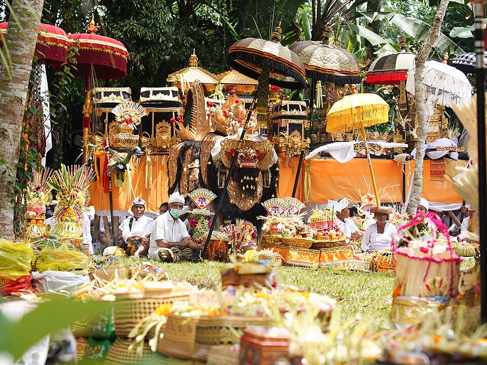
PENGERTIAN
Apa Itu Melasti?
Upacara Melasti merupakan salah satu upacara suci umat Hindu yang dilaksanakan beberapa hari sebelum Hari Raya Nyepi. Upacara ini bertujuan untuk menyucikan diri, alam, dan segala sarana persembahyangan dengan cara menghaturkan persembahan di sumber air suci, seperti laut, danau, atau mata air.
Dalam kepercayaan Hindu, air dipercaya sebagai simbol kehidupan dan kesucian. Oleh karena itu, Melasti menjadi lambang pembersihan lahir maupun batin agar umat dapat memasuki Hari Raya Nyepi dengan hati yang bersih dan damai.
TUJUAN
Mengapa Melasti Dilaksanakan?
Upacara Melasti dilaksanakan sebagai persiapan menyambut Hari Raya Nyepi. Melalui upacara ini, umat Hindu memohon penyucian diri dari segala pikiran, perkataan, dan perbuatan yang kurang baik agar dapat memasuki Tahun Baru Saka dengan hati yang bersih.
Selain menyucikan diri, Melasti juga menjadi bentuk penghormatan kepada alam sebagai sumber kehidupan. Tradisi ini mengajarkan bahwa manusia harus hidup selaras dengan lingkungan serta menjaga keseimbangan antara manusia, alam, dan Tuhan.
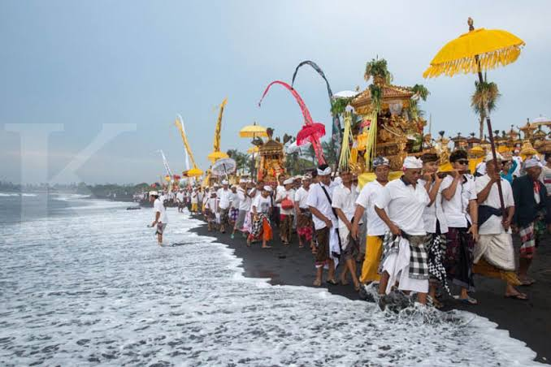
TAHAPAN
Tahapan Upacara Melasti
Persiapan
Umat Hindu mempersiapkan pratima, sarana upacara, dan berbagai perlengkapan persembahyangan sebelum berangkat menuju tempat pelaksanaan Melasti.
Menuju Sumber Air
Umat Hindu menuju laut, danau, atau mata air yang dianggap suci sebagai tempat pelaksanaan upacara.
Persembahyangan
Pemangku memimpin doa bersama sebagai bentuk penghormatan kepada Ida Sang Hyang Widhi Wasa serta memohon penyucian.
Penyucian
Air suci digunakan sebagai simbol pembersihan lahir dan batin bagi umat serta penyucian berbagai pratima dan sarana upacara.
Kembali ke Pura
Setelah seluruh rangkaian selesai, umat kembali ke pura sambil membawa pratima yang telah disucikan untuk persiapan Hari Raya Nyepi.
TAHUKAH KAMU?
Fakta Menarik Tentang Melasti
Dilaksanakan di Sumber Air
Melasti umumnya dilaksanakan di laut, danau, atau mata air karena air dipercaya sebagai lambang penyucian dalam ajaran Hindu.
Menjelang Hari Raya Nyepi
Upacara Melasti dilaksanakan beberapa hari sebelum Hari Raya Nyepi sebagai bentuk persiapan menyambut Tahun Baru Saka dengan hati dan jiwa yang bersih.
Diikuti Ribuan Umat
Di berbagai daerah di Bali, prosesi Melasti dapat diikuti oleh ribuan umat Hindu yang berjalan bersama menuju tempat pelaksanaan upacara sambil membawa pratima dan perlengkapan suci.
Tradisi yang Tetap Dilestarikan
Selain memiliki makna spiritual, Melasti menjadi salah satu warisan budaya Indonesia yang masih dijaga dan dilestarikan hingga sekarang sebagai bagian dari identitas budaya Bali.
MELASTI
Melasti dalam Kehidupan
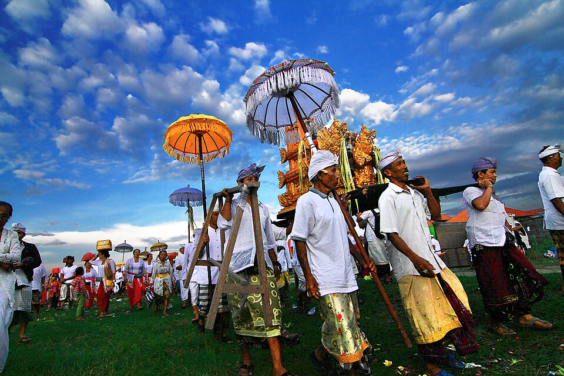
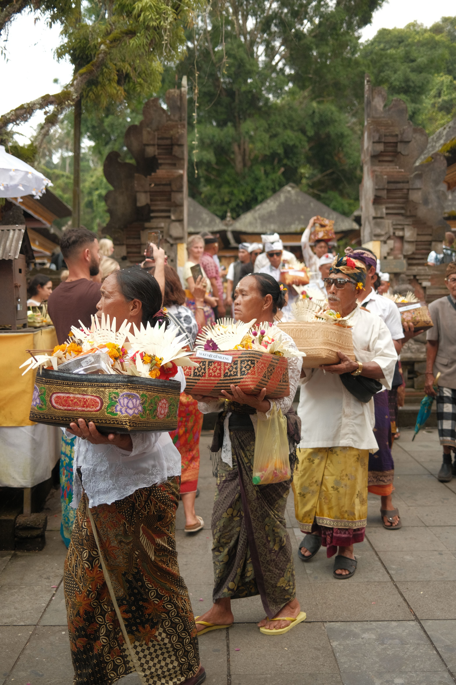
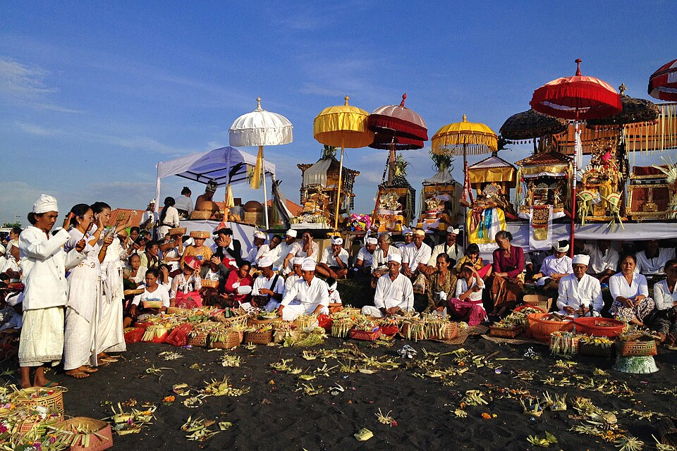
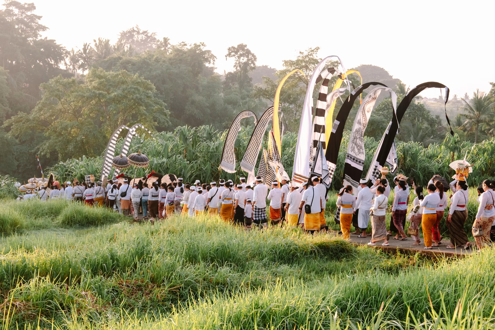
KELOMPOK KAMI
Di Balik The Very Cool Presentation
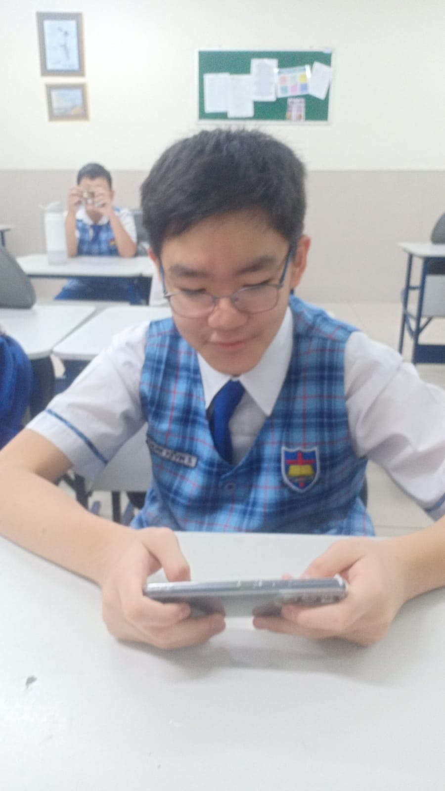
Andre
Coder
Ethan
Desain
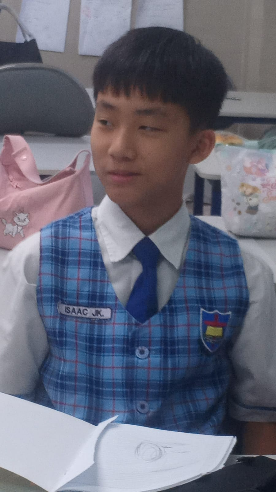
Isaac
Editor Canva
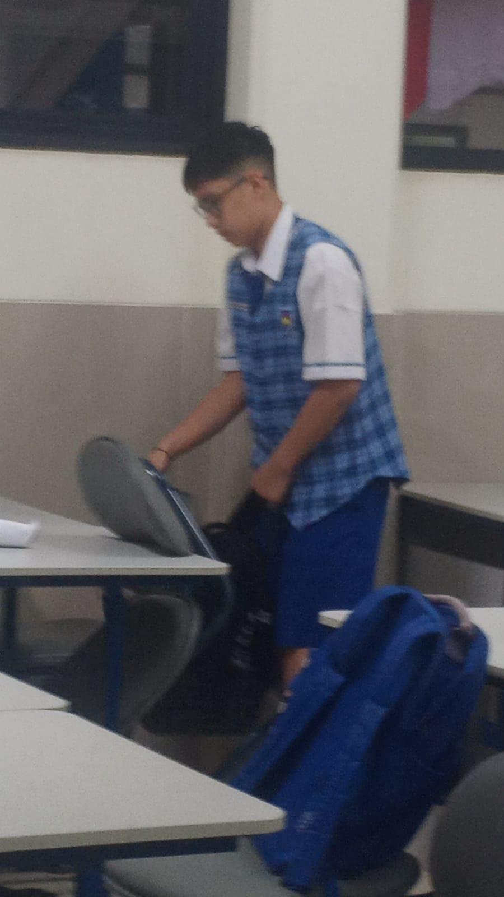
Maxi
Desain
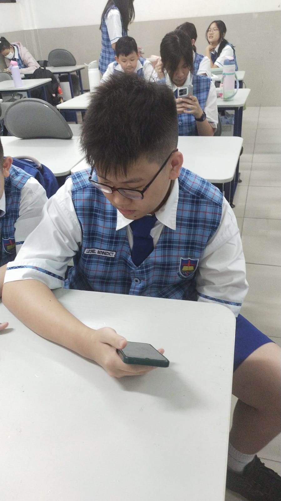
Leonel
Editor Website
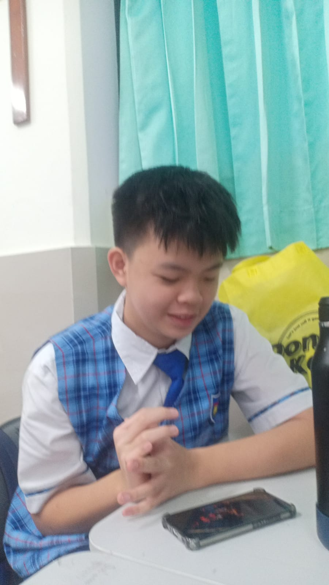
Austin
Editor Canva